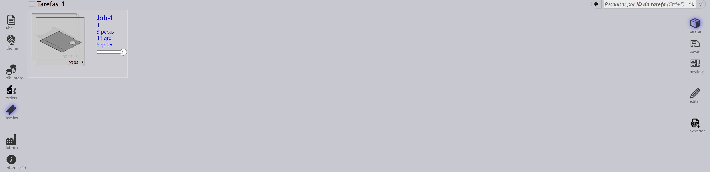
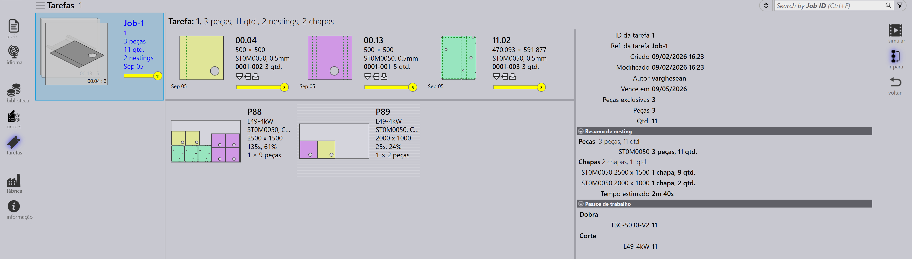
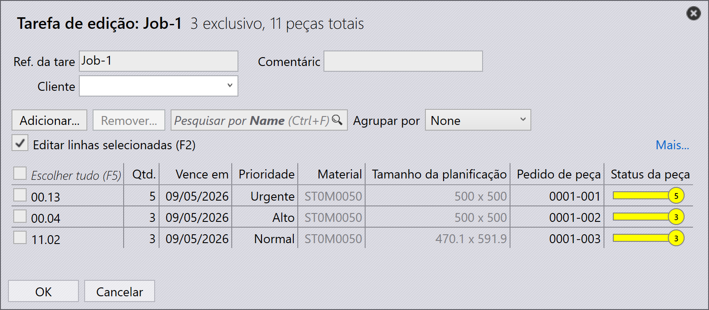
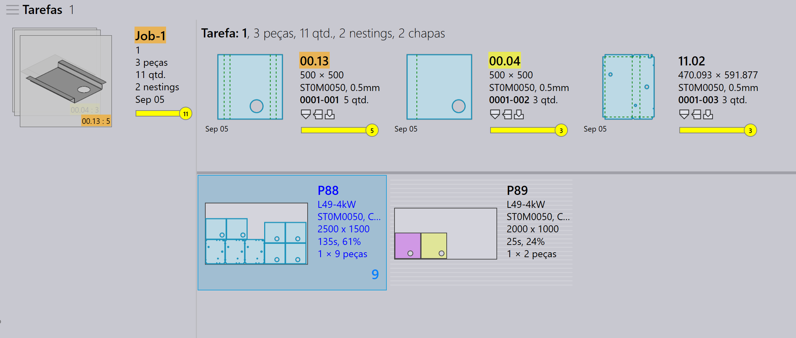

Visualização de job
Esta seção explica as diferentes visualizações disponíveis na visualização de Job, incluindo Jobs, Parts, Nests, Edit, Simulate e Export.
Jobs
Selecionar a opção tarefas exibe uma lista de todos os jobs atualmente configurados no software. Você pode clicar duas vezes em um job para ver seus detalhes ou clicar com o botão direito para acessar opções adicionais.
-
Os jobs são exibidos na visualização de blocos, onde cada job é exibido com propriedades básicas como Job ID, Job Ref, nome do cliente, Total parts, Due Date, barra de status do job etc.
-
Cada bloco de job também exibe imagens de peças em um formato de cartão empilhado. Você pode percorrer todas as peças de um job usando a roda do mouse.

Detalhes do job
-
Clicar duas vezes em um bloco ou pressionar a tecla Enter após selecionar um bloco alterna a visualização para o Detail Mode.
-
A página de detalhes exibe a lista de peças junto com as chapas aninhadas (layouts), se houver.
-
Use as teclas de seta para cima/baixo para alternar entre os jobs na página de detalhes.
-
Rolar a roda do mouse sobre a pilha de peças destaca a peça tanto na lista de peças quanto nos layouts.
-
Selecionar um layout destaca o layout e todas as peças aninhadas nele na lista de peças. Os destaques são desativados automaticamente após um minuto.

-
Resumo de nesting:
-
Peças: Exibe o número total de itens de pedido e a quantidade total no job.
-
chapas: Exibe o número total de chapas aninhadas junto com a quantidade total de chapas.
-
-
Passos de trabalho:
-
Dobra: Mostra a máquina atribuída e sua quantidade de pedido a ser processada.
-
Corte: Mostra a máquina atribuída e sua quantidade de pedido a ser processada.
-
Prioridade
-
Primeiro, clique no ícone Jobs no lado esquerdo da tela, selecione o job que deseja editar e, em seguida, clique em edit no lado direito da tela (certifique-se de que a opção Jobs esteja selecionada).
-
Como alternativa, clique com o botão direito no job selecionado e clique no ícone Fazer check-out do documento para edição.
-
Ao clicar em edit, a janela de edição do job aparece. Nesta janela, você pode definir ou alterar a prioridade do job.

-
Com base na prioridade das peças do job, a Reference do job no bloco do job é sombreada com cor de acordo.
-
As peças do job são ordenadas primeiro por prioridade e depois por data de vencimento. Elas também são sombreadas com cor de acordo com sua prioridade.
-
Durante o nesting, as peças Urgent são consideradas primeiro, seguidas por High, depois Normal e, finalmente, as peças de prioridade Low são colocadas no espaço restante nas chapas de nest.
-
As chapas de nest também são ordenadas e sombreadas com cor de acordo com a prioridade.
| Prioridade do job | Descrição da cor |
|---|---|
|
Urgent |
|
Normal |
|
High |
|
Low |



Status
-
A barra de status do job usa códigos de cores para indicar o progresso ou a condição do job com base na quantidade processada ou restante.
-
As peças dentro do job e as chapas de nest também são destacadas com cores correspondentes para refletir seu status individual dentro do JOB geral.
-
A codificação por cores melhora o rastreamento e garante que os operadores possam ver facilmente o status da produção rapidamente.
| Status do job | Descrição |
|---|---|
|
Não está pronto |
|
Nesting |
|
Pronto |
|
Bend Planned |
|
Chapa em falta |
|
Fila de dobra |
|
Fila de corte |
|
Feito |


Parts
A visualização Active Parts exibe todas as peças que estão em andamento no momento dentro de jobs ativos.
Cada peça é representada como um bloco mostrando detalhes importantes, como nome da peça, dimensões, material, espessura, quantidade e data de vencimento. Uma prévia visual da peça também é exibida.
Esta visualização ajuda os usuários a monitorar o status de processamento de peças individuais e rastrear seu progresso ao longo dos jobs em andamento.
Nests
A visualização Active Nests exibe todos os nests que estão em andamento no momento dentro de jobs ativos.
Cada nest é representado com detalhes relevantes, como número de peças e status de processamento. Um layout visual das peças aninhadas também é exibido.
Esta visualização ajuda os usuários a monitorar o progresso do nesting e rastrear como as peças são organizadas e processadas nas chapas.
Edit
A opção Edit permite modificar o item selecionado.
Com base na visualização atual, a instância selecionada é aberta para edição:
-
Na visualização Jobs, o job selecionado é aberto para edição.
-
Na visualização Active Parts, a peça selecionada é aberta para edição.
-
Na visualização Active Nests, o nest selecionado é aberto para edição.
Export csv
A opção Export permite selecionar informações do job e exportá-las para um arquivo CSV.
-
Clique no ícone jobs.
-
Clique na opção export no lado direito da tela.
-
Uma caixa de diálogo aparece mostrando os campos disponíveis:
-
Marque as caixas de seleção dos campos que deseja exportar.
-
Use a opção Group By se quiser agrupar os dados por um campo selecionado.
-
Clique em Export para gerar o arquivo CSV.
Informações adicionais
Há também três ícones adicionais no lado direito da tela, que são simular, Goto e voltar.
-
Simulate abrirá o item selecionado para uma visualização mais detalhada.
-
Goto alternará o foco e a exibição para a peça ou o nest que está selecionado.
-
Back voltará um nível de onde você está atualmente, por exemplo, clicar em voltar durante a simulação o levará de volta ao job principal e, de um job, o levará de volta à exibição principal de jobs.